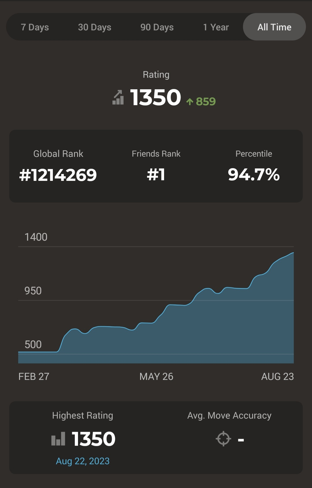

A few things that I enjoy
Chess
I got into chess earlier this year, and started playing on Chess.com. I currently only have a rating of 1350, but I am on an upwards trend, and I hope with some practice I can reach a rating of 1800 by the end of this year.
Contra Dancing
I started learning how to do some contra dancing during the summer, and attend a contra dance every other week.
Medieval Creations
Although this was more of a hobby trend when I was younger, I still enjoy medieval weapons and armor. Some of those who shared the CIS 130 class with me may have seen my chainmail. I also built a trebuchet and onager when I was around 12 years old.